Misi Hari Ini
- Menjelaskan apa itu translasi.
- Mencocokkan blok dengan kode Python.
- Menerjemahkan program sederhana dari blok ke Python.
- Memperbaiki kesalahan penulisan (debug).
1. Apa itu Translasi?
Pernah nonton film Korea pakai subtitle? Ceritanya sama, bahasanya berbeda. Program komputer juga bisa begitu! Translasi = menerjemahkan program ke bentuk penulisan lain tanpa mengubah logikanya.
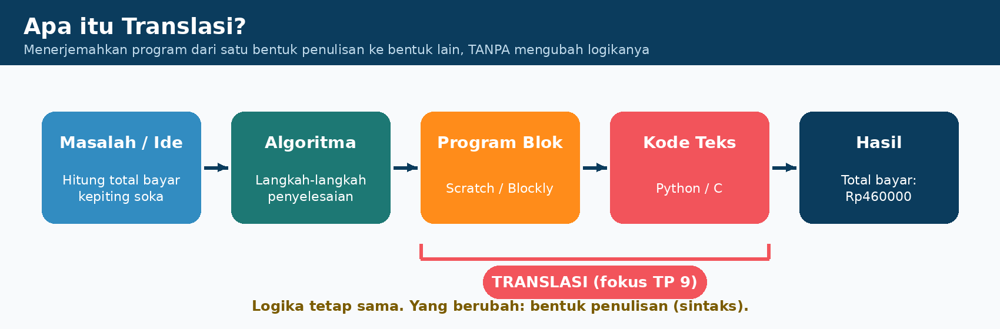
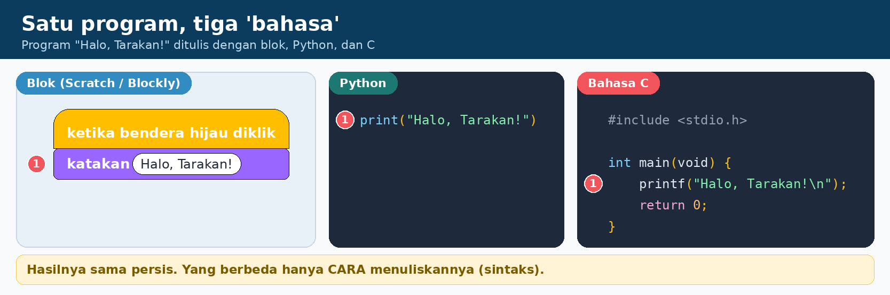
Blok vs Teks
| Blok (Scratch/Blockly) | Teks (Python/C) | |
|---|---|---|
| Cara menulis | Seret dan sambung blok | Ketik sendiri |
| Aturan | Bentuk blok mencegah salah susun | Harus tepat: kurung, kutip, titik dua, indentasi |
| Salah ketik | Nyaris tidak mungkin | Gampang banget! |
| Cocok untuk | Belajar konsep, game sederhana | Aplikasi web, AI, program besar |
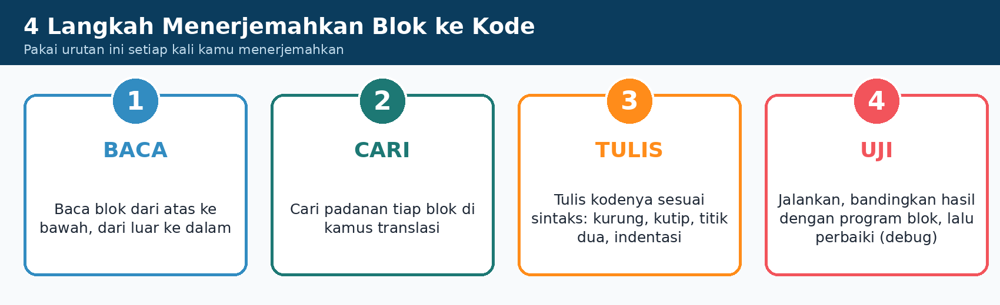
2. Kamus Translasi
Alat utama detektif kode. Ketik kata di kotak untuk mencari pasangan.
| Blok | Python | Bahasa C |
|---|---|---|
| katakan 'teks' | print("teks") | printf("teks\n"); |
| tanya ... dan tunggu | x = input("...") | scanf("%d", &x); |
| atur x menjadi 5 | x = 5 | int x = 5; |
| ubah x sebesar 1 | x = x + 1 | x = x + 1; |
| gabungkan 'a' 'b' | "a" + "b" | printf("%s%s", a, b); |
| jika ... maka | if syarat: | if (syarat) { } |
| jika ... lainnya | else: | else { } |
| ulangi 10 kali | for i in range(10): | for (i=0; i<10; i++) { } |
| ulangi sampai ... | while syarat_dibalik: | while (syarat_dibalik) { } |
| dan / atau / bukan | and / or / not | && / || / ! |
| sama dengan ( = ) | == | == |
| definisikan f(x) | def f(x): | tipe f(tipe x) { } |
| kembalikan hasil | return hasil | return hasil; |
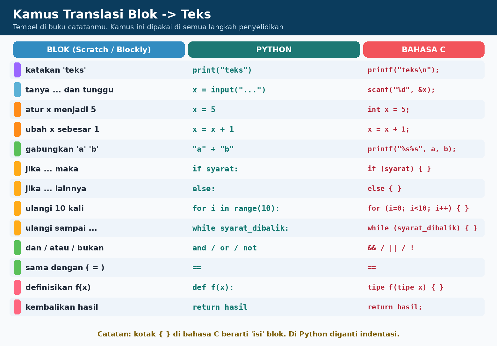
3. Menyelidiki Lima Pasangan Blok dan Kode
Perhatikan angka merah: angka yang sama berarti blok dan kode itu berpasangan. Tebak dulu, baru baca kuncinya!
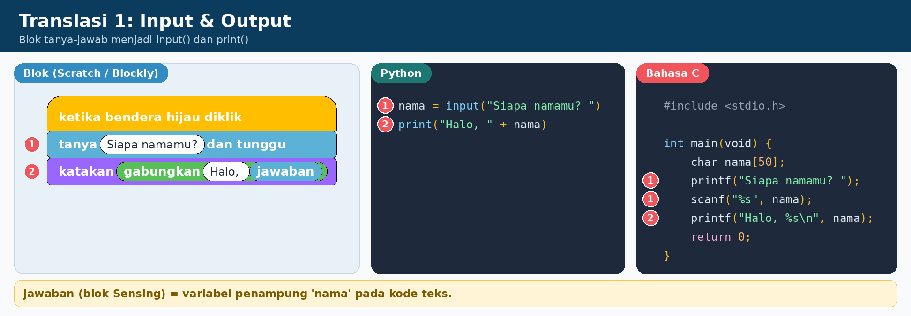
katakanmenjadiprint(...). Teks wajib diapit kutip.tanya ... dan tunggumenjadiinput(...); jawaban disimpan di variabel.gabungkanmenjadi tanda+.
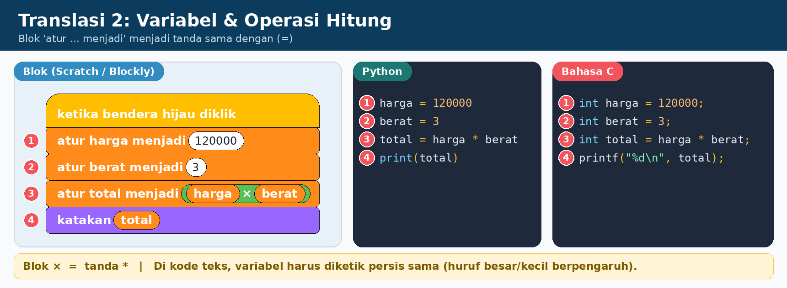
atur harga menjadi 120000menjadiharga = 120000.- Tanda
=artinya mengisi, bukan "sama dengan" di Matematika. - × menjadi
*.
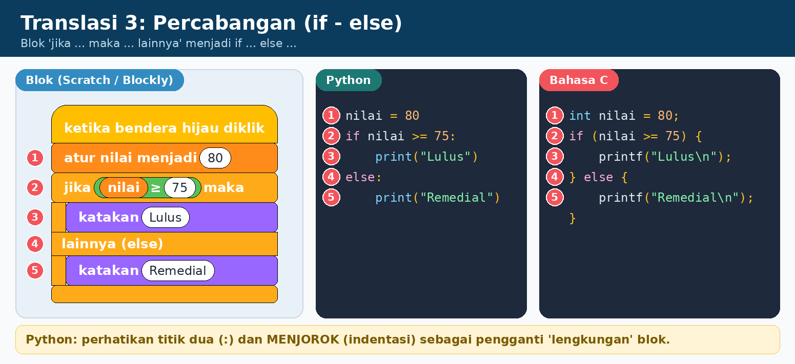
- "Mulut" blok diganti titik dua (:) dan indentasi.
else:juga memakai titik dua.
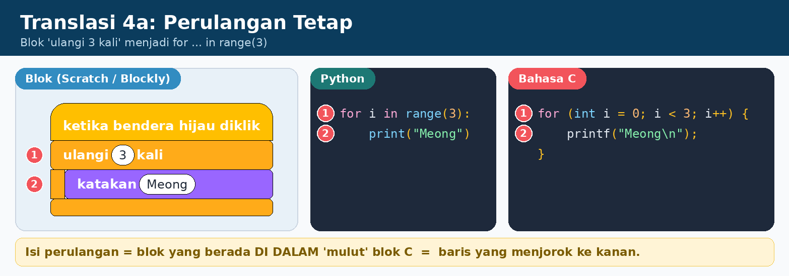
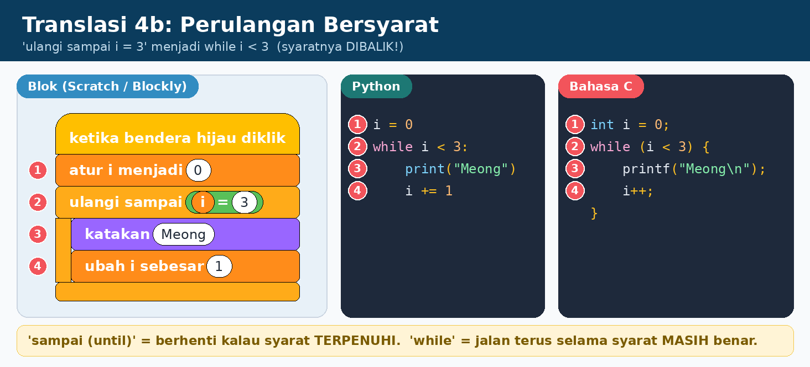
while justru jalan selama syarat masih benar. Jadi syaratnya dibalik: while i < 3.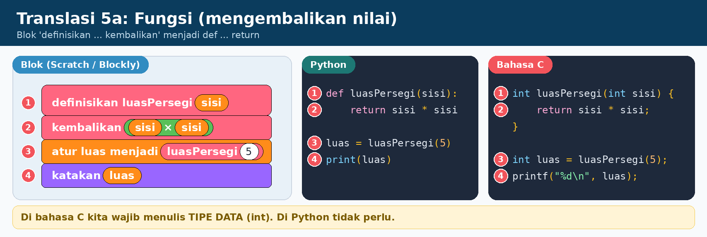
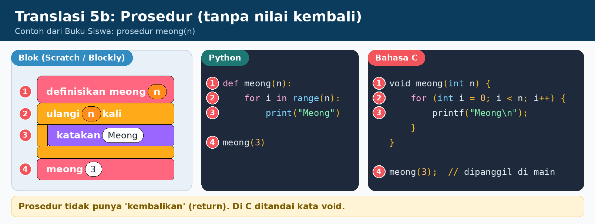
definisikanmenjadidef nama(parameter):.- Fungsi punya
return; prosedur tidak.
4. Sintaks: Tanda Kecil, Tugas Besar
Sintaks = aturan penulisan. Komputer sangat teliti: kurang satu tanda saja, program error.
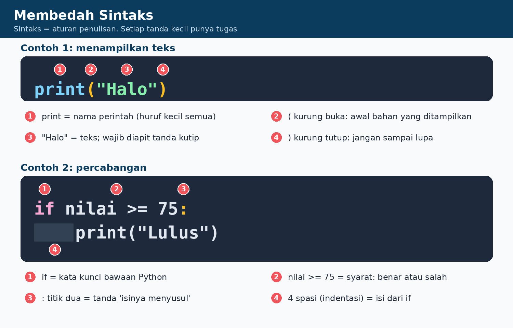
Enam kesalahan yang sering terjadi
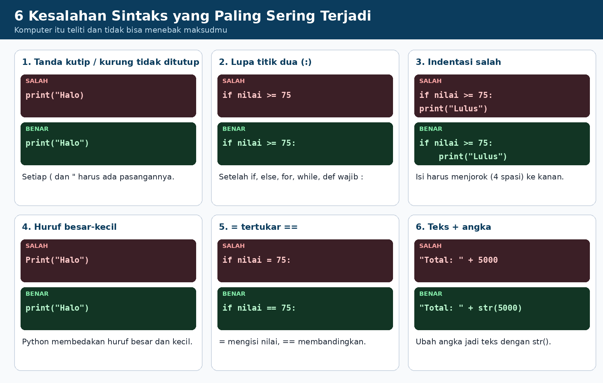
5. Kasus: Kalkulator Warung Kepiting Soka
Kepiting soka khas Tarakan! Harga Rp120.000/kg. Beli 3 kg atau lebih dapat potongan Rp20.000.
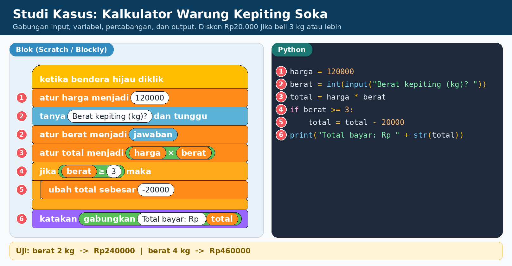
Coba jalankan langkah demi langkah
total = total - 20000 dilewati karena syarat berat >= 3 tidak terpenuhi.6. Latihan
A. Pasangkan blok dengan kode
Klik satu blok, lalu klik pasangan kodenya.
B. Detektif Bug
Klik baris yang mengandung kesalahan.
C. Kuis
7. Rangkuman
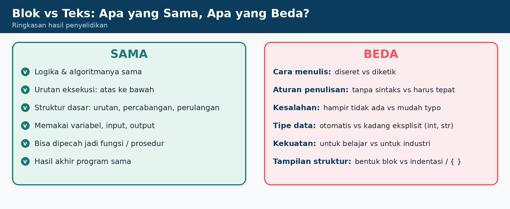
Kaidah Emas Translasi
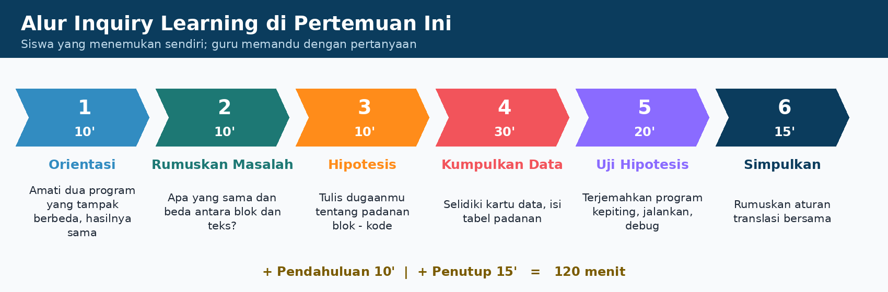
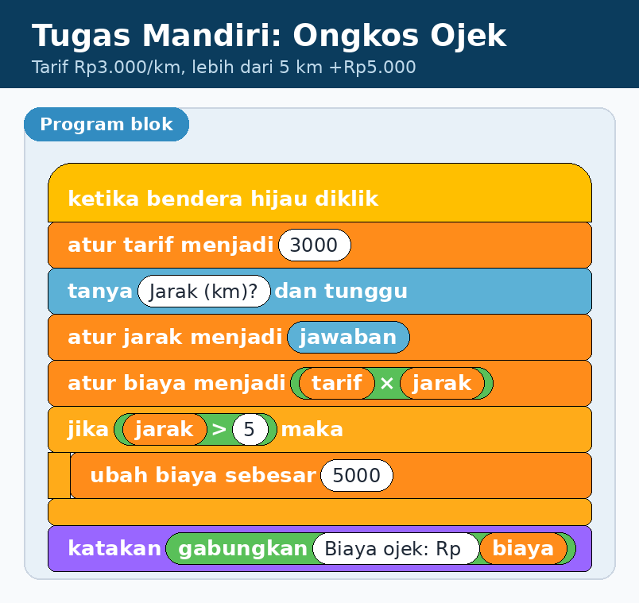